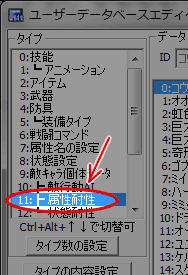
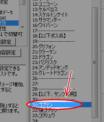
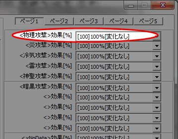
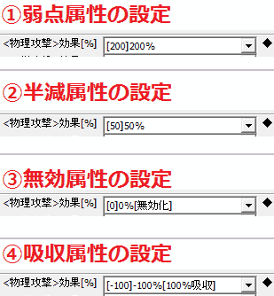
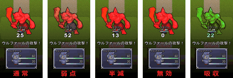

ユーザデータベース
右のようなウィンドウが表示されます。

キャラクターの得意なもの、苦手なものを決めるのが属性という項目です。
この属性の設定によって、雷に弱い鳥、冷気の効かない魚、炎を吸収するトカゲ、
通常攻撃が効きにくいゴーレムなど個性のあるモンスターを作ることができます。
本トピックではサンプルゲームにあらかじめ入っている、
敵キャラクター「ゴブリン」の「物理攻撃」属性への耐性を
「弱点」「半減」「無効」「吸収」に設定することで、
属性攻撃に対する耐性の度合いの設定の仕方を習得します。
|
本トピックの【手順】では、 まず「属性耐性について」の項で、どこでどのような数値を 設定すれば属性耐性が生まれるのかについて解説し、 次に「属性の設定」の項でゴブリンの物理攻撃耐性を実際に設定し、 最後に「結果の確認」の項でテストプレイの行い方をご紹介します。 |
| 【1】 ユーザDBを開く ユーザデータベース 右のようなウィンドウが表示されます。 |
|
| 【2】 編集するタイプの選択 ウィンドウが開いた直後は「タイプ」が「技能」になっています。 今回の設定はユーザデータベースの11番「┣ 属性耐性」で行いますので、 「11:┣ 属性耐性」をクリックして下さい。 |
 |
| 【3】 編集するデータの選択 ウィンドウの中ほどにデータ一覧があります。 データはこの中から「31:ゴブリン」を選択してください。 |
 |
| 【4】 属性への耐性 次に、各属性の攻撃がダメージに及ぼす効果を設定します。 この記事では「物理攻撃」への耐性を設定しますので、 ウィンドウ右端にある「＜物理攻撃＞効果[%]」を編集します。 ページ1の一番上にある項目です。 ここの数値は、ウディタダウンロード時から設定を変えていなければ、 「[100]100%[変化なし]」が選択されているはずです。 この100%を基準として、耐性設定値が 100より大きい 場合は ダメージが大きくなっていきます。（弱点） 耐性設定値が 100より小さい 場合はダメージも小さくなる、 つまり 耐性がある ことになります。（半減） 0 に設定するとその属性の攻撃は全く効かなくなります。（無効） -1以下 の値を入力すると、 属性攻撃を吸収してHP/SPを回復させてしまう設定になります。（吸収） |
 |
|
ここでは「物理攻撃」属性をゴブリンの 弱点、半減、無効、吸収 属性に 設定する方法をそれぞれご紹介します。 これらは全て同一箇所への設定ですので、どれか１つを設定したら テストプレイ(次の項「結果の確認」にて方法をご紹介しています)を セットで行うようにしてください。 ①弱点属性の設定 「物理攻撃」をゴブリンの「弱点属性」にします。 プルダウンリストから「[200]200%」を選択してください。 選択できたらウィンドウ右下のボタン「OK」か「更新」を押して上書きします。 ②半減属性の設定 ゴブリンに対して、「物理攻撃」が効きにくい「半減属性」を設定します。 プルダウンリストから「[50]50%」を選択してください。 選択できたらウィンドウ右下のボタン「OK」か「更新」を押して上書きします。 ③無効属性の設定 ゴブリンにとっての「物理攻撃」を「無効属性」にします。 プルダウンリストから「[0]0%[無効化]」を選択してください。 選択できたらウィンドウ右下のボタン「OK」か「更新」を押して上書きします。 ④吸収属性の設定 「物理攻撃」をゴブリンの「吸収属性」にします。 プルダウンリストから「[-100]-100%[100%吸収]」を選択してください。 選択できたらウィンドウ右下のボタン「OK」か「更新」を押して上書きします。 |
 |
|
属性耐性を設定出来たら、テストプレイしてみましょう。 テストプレイしたいけど戦闘イベントの作り方が分からないという場合は、 「バトルを発生させたい」を参考にして 敵グループの31番「ゴブリン1匹」をマップイベントなどで呼び出してください。 通常、弱点、半減、無効、吸収の５パターンのゴブリンに対して、 「物理攻撃」である通常攻撃で攻撃するテストプレイを 行った結果が右の画像です。 属性耐性以外のパラメータがまったく同一であるモンスターでも、 属性耐性を変更することで大きな差が生まれましたね。 以上でこの記事の内容は終了です。お疲れ様でした。 |
 |
|
■武器に状態異常付与効果を持たせる 今回は属性攻撃への耐性の設定を扱いましたが、 ステータス異常への耐性については 「敵のｽﾃｰﾀｽ異常への耐性を決めたい」を参照してください。 |
＜執筆者：ウディタ公式ガイド執筆コミュ。＞